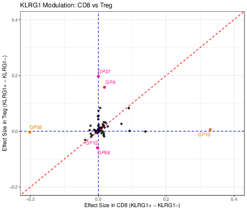
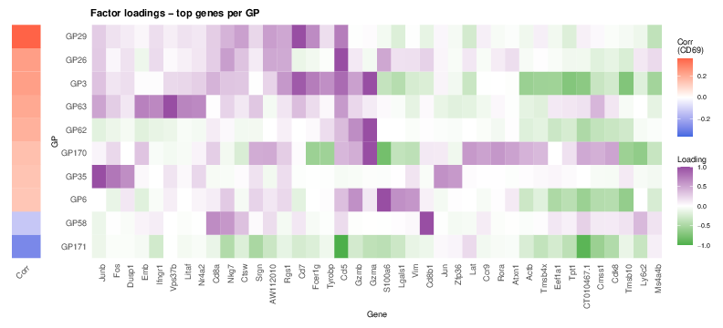
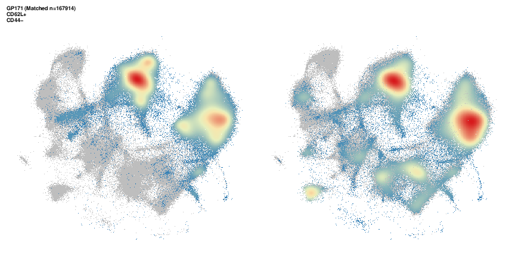
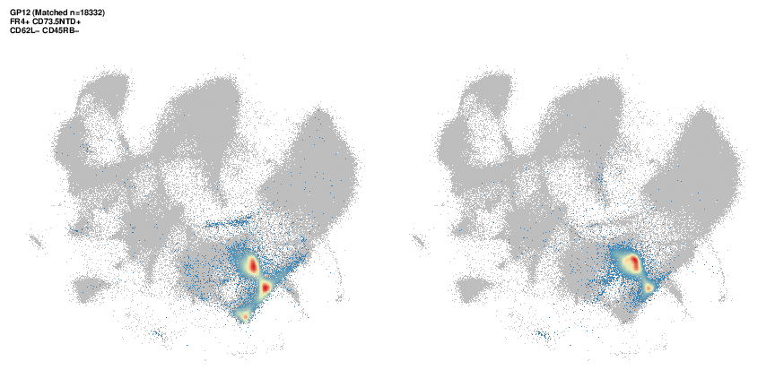
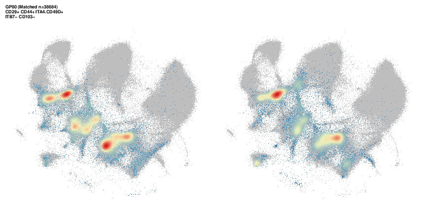
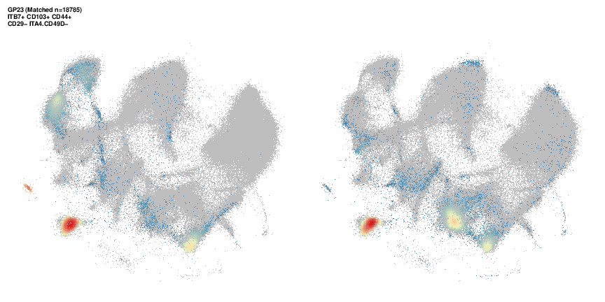
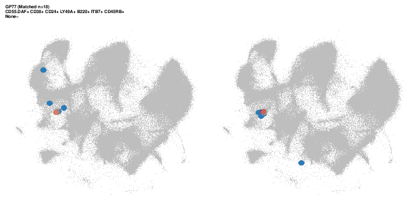
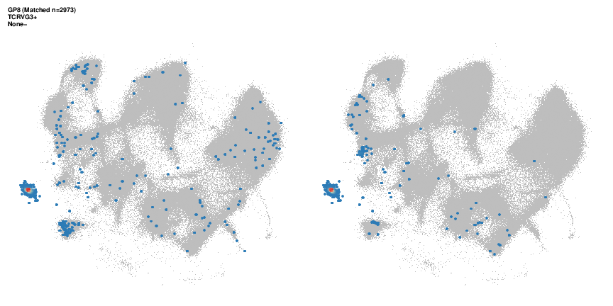

Figure 7: Surface-marker associations are context-dependent, but combinatorial gating resolves specific gene programs
Ziang Zhang
Last updated: 2026-09-10
Checks: 7 0
Knit directory:
immgenT-GP-analysis/analysis/
This reproducible R Markdown analysis was created with workflowr (version 1.7.2). The Checks tab describes the reproducibility checks that were applied when the results were created. The Past versions tab lists the development history.
Great! Since the R Markdown file has been committed to the Git repository, you know the exact version of the code that produced these results.
Great job! The global environment was empty. Objects defined in the global environment can affect the analysis in your R Markdown file in unknown ways. For reproduciblity it’s best to always run the code in an empty environment.
The command set.seed(1) was run prior to running the
code in the R Markdown file. Setting a seed ensures that any results
that rely on randomness, e.g. subsampling or permutations, are
reproducible.
Great job! Recording the operating system, R version, and package versions is critical for reproducibility.
Nice! There were no cached chunks for this analysis, so you can be confident that you successfully produced the results during this run.
Great job! Using relative paths to the files within your workflowr project makes it easier to run your code on other machines.
Great! You are using Git for version control. Tracking code development and connecting the code version to the results is critical for reproducibility.
The results in this page were generated with repository version 284d321. See the Past versions tab to see a history of the changes made to the R Markdown and HTML files.
Note that you need to be careful to ensure that all relevant files for
the analysis have been committed to Git prior to generating the results
(you can use wflow_publish or
wflow_git_commit). workflowr only checks the R Markdown
file, but you know if there are other scripts or data files that it
depends on. Below is the status of the Git repository when the results
were generated:
Ignored files:
Ignored: .DS_Store
Ignored: .claude/
Ignored: analysis/.DS_Store
Ignored: analysis/.Rhistory
Ignored: analysis/assets/.DS_Store
Ignored: captions/
Ignored: code/.DS_Store
Ignored: code/other/topic_flashier_20250212.R
Ignored: code/other/topic_wrapper_20250215_alldata_backfit.sh
Ignored: data
Ignored: experiments/
Ignored: figures/.DS_Store
Ignored: figures/final-selected/.DS_Store
Ignored: figures/final-selected/Figure 1/.DS_Store
Ignored: figures/final-selected/Figure 2/.DS_Store
Ignored: figures/final-selected/Figure 5/.DS_Store
Ignored: figures/final-selected/Figure S1/.DS_Store
Ignored: internal/
Ignored: log/
Ignored: output/.DS_Store
Ignored: output/Figure2/
Ignored: plan/
Ignored: tables/
Ignored: tmp/
Note that any generated files, e.g. HTML, png, CSS, etc., are not included in this status report because it is ok for generated content to have uncommitted changes.
These are the previous versions of the repository in which changes were
made to the R Markdown (analysis/Figure7.Rmd) and HTML
(docs/Figure7.html) files. If you’ve configured a remote
Git repository (see ?wflow_git_remote), click on the
hyperlinks in the table below to view the files as they were in that
past version.
| File | Version | Author | Date | Message |
|---|---|---|---|---|
| html | 5874416 | Ziang Zhang | 2026-09-10 | Build site: main Figure 4 inserted, Extended Data back to 1-7 |
| Rmd | 4307b28 | Ziang Zhang | 2026-09-10 | New main Figure 4, and fold the cluster heatmap into Extended Data Figure 2 |
| html | a7a481f | Ziang Zhang | 2026-09-09 | Build site: the rebuilt Figure 1d and the Extended Data renumbering |
| html | 1e88d7e | Ziang Zhang | 2026-09-04 | Build site: published captions and titles across all 24 pages |
| Rmd | 0267e5b | Ziang Zhang | 2026-09-04 | Captions from the published manuscript; trim editor notes off the page code |
| html | 19c977f | Ziang Zhang | 2026-09-02 | Build site: Extended Data 5-7 renumbered, Figure S5 page rebuilt |
| html | dd76d38 | Ziang Zhang | 2026-08-19 | Build site: Figure 7 and index pages rebuilt |
| Rmd | 801dbf7 | Ziang Zhang | 2026-08-19 | Figure 7 pages: present Figure 7 as one figure spanning EBMF and RQVI |
| html | cbcec52 | Ziang Zhang | 2026-07-30 | Build site: Extended Data Figure naming |
| Rmd | 66aa029 | Ziang Zhang | 2026-07-30 | Name the Extended Data figures as published on the site |
| html | ac650a0 | Ziang Zhang | 2026-07-30 | Build site: Figure S5 (ex-S6a) and Figure S6 as a-f |
| html | 732ac8d | Ziang Zhang | 2026-07-29 | Build site: caption alignment with captions_20260729_final.docx |
| Rmd | 8d73953 | Ziang Zhang | 2026-07-28 | Align captions with captions_20260729_final.docx |
| html | ae21d37 | Ziang Zhang | 2026-07-28 | Build site: republish after the reorder commits |
| html | d538aa2 | Ziang Zhang | 2026-07-28 | Build site: reordered Figures 6 / S6 / S3 and the new Figure 7b page |
| Rmd | 4c07670 | Ziang Zhang | 2026-07-28 | Reorder Figures 6, S6 and S3; make the ex-S5 figure Figure 7b |
All panels except (a) are produced by script/Figure7.R,
which shares its CITE-seq setup with Extended
Data Figure 5 and Extended Data Figure 6
via code/R/citeseq_shared_setup.R. The code below is shown
for reference (not re-executed on this page, since this script takes
about a minute to run); the images are its pre-rendered output.
Setup
library(ggplot2)
library(ggrepel)
library(dplyr)
library(patchwork)
library(tidyr)
library(Matrix) # protein matrices are dgCMatrix; must be attached for `[` to dispatch
data_path <- "data/"
figure_path <- "figures/final-selected/Figure 7/"
source("code/R/gated_protein_helpers.R")
# 7a: hand-drawn schematic -- not code-generated, no output here.Panels (b) onward additionally load the shared CITE-seq cell/protein setup:
# ============================================================
# Load data (shared with FigureS5.R and FigureS6.R)
# ============================================================
source("code/R/citeseq_shared_setup.R")(a) Protein-signature schematic
This panel is a hand-drawn schematic, not generated from code.
How the protein factor matrix is estimated is documented in Methods: fitting CITE-seq protein programs with fixed scRNA loadings.
Fig. 7a. Schematic illustrating how protein signatures were defined for each GP. Holding the cell-loading matrix L fixed from the GP model, a protein factor matrix was estimated by EBMF from the paired CITE-seq protein measurements, Y ≈ LUᵀ (cells × proteins matrix), yielding a protein signature U (proteins × GPs matrix) for each GP.
(b, c) KLRG1 modulation across lineages
# ============================================================
# 7b/7c: KLRG1 modulation (CD8 vs CD4, CD8 vs Treg)
# ============================================================
FlashierDGE_corrected <- function(F1, L1, group1, group2, title_plot = "") {
loadings_group1 <- colMeans(L1[group1, ])
loadings_group2 <- colMeans(L1[group2, ])
mean_change_loadings <- loadings_group1 - loadings_group2
vplot <- data.frame(SYMBOL = names(mean_change_loadings), mean_change_loadings = mean_change_loadings, AveExpr = colMeans(L1[c(group1, group2), ]))
list(diff_factors = vplot)
}
get_klrg1_split <- function(cell_type_label, meta, protein_data, threshold) {
cells <- meta$cellID[meta$annotation_level1 == cell_type_label]
cells <- intersect(cells, rownames(protein_data))
list(pos = cells[protein_data[cells, "KLRG1"] >= threshold], neg = cells[protein_data[cells, "KLRG1"] < threshold])
}
run_checked_dge <- function(group_list, F_mat, L_mat, label) {
if (length(group_list$pos) < 3 || length(group_list$neg) < 3) stop(paste("Insufficient data:", label))
df <- FlashierDGE_corrected(F1 = F_mat, L1 = L_mat, group1 = group_list$pos, group2 = group_list$neg)$diff_factors
if (!"SYMBOL" %in% colnames(df)) df$SYMBOL <- rownames(df)
df
}
plot_target_gps <- function(df, x_var, y_var, label_var, target_gps, highlight_color = "darkorange", background_color = "black",
x_limits = c(-0.5, 0.5), y_limits = c(-0.5, 0.5), background_alpha = 0.5,
xlab = "Difference in Mean Loading", ylab = "Difference in Mean Loading", title = "Comparison of Specific GP Loadings") {
highlight_df <- df %>% filter({{ label_var }} %in% target_gps) %>% mutate(.label_display = as.character({{ label_var }}))
ggplot(df, aes(x = {{ x_var }}, y = {{ y_var }})) +
geom_point(color = background_color, alpha = background_alpha) +
geom_abline(slope = 1, intercept = 0, linetype = "dashed", color = "red") +
geom_hline(yintercept = 0, linetype = "dashed", color = "blue") +
geom_vline(xintercept = 0, linetype = "dashed", color = "blue") +
geom_point(data = highlight_df, aes(color = {{ label_var }}), size = 2) +
ggrepel::geom_text_repel(seed = 42, data = highlight_df, aes(label = .label_display, color = {{ label_var }}), max.overlaps = Inf, size = 3.5, box.padding = 0.35, point.padding = 0.5, segment.color = "grey50", show.legend = FALSE) +
scale_color_manual(values = highlight_color, guide = "none") +
coord_cartesian(xlim = x_limits, ylim = y_limits) +
labs(x = xlab, y = ylab, title = title) +
theme_minimal()
}
klrg1_threshold <- threshold_results_subset_manual$Threshold[threshold_results_subset_manual$Protein == "KLRG1"]
cd8_split <- get_klrg1_split("CD8", seurat_meta_filtered, protein_mat_normalized_lognorm, klrg1_threshold)
CD4_split <- get_klrg1_split("CD4", seurat_meta_filtered, protein_mat_normalized_lognorm, klrg1_threshold)
treg_split <- get_klrg1_split("Treg", seurat_meta_filtered, protein_mat_normalized_lognorm, klrg1_threshold)
diff_CD8 <- run_checked_dge(cd8_split, F_pm_filtered, L_pm_filtered, "CD8") %>% rename(mean_change_CD8 = mean_change_loadings, AveExpr_CD8 = AveExpr)
diff_CD4 <- run_checked_dge(CD4_split, F_pm_filtered, L_pm_filtered, "CD4") %>% rename(mean_change_CD4 = mean_change_loadings, AveExpr_CD4 = AveExpr)
diff_Treg <- run_checked_dge(treg_split, F_pm_filtered, L_pm_filtered, "Treg") %>% rename(mean_change_Treg = mean_change_loadings, AveExpr_Treg = AveExpr)
# 7b: CD8 vs CD4
merged_cd4 <- inner_join(diff_CD4, diff_CD8, by = "SYMBOL")
p_7b <- plot_target_gps(
df = merged_cd4, x_var = mean_change_CD8, y_var = mean_change_CD4, label_var = SYMBOL,
target_gps = c("GP10", "GP58", "GP25", "GP26", "GP43"), background_alpha = 0.8, x_limits = c(-0.2, 0.4), y_limits = c(-0.2, 0.4),
highlight_color = c("GP10" = "darkorange2", "GP25" = "blue", "GP43" = "blue", "GP26" = "blue", "GP58" = "darkorange2"),
title = "KLRG1 Modulation: CD8 vs CD4", xlab = "Effect Size in CD8 (KLRG1+ - KLRG1-)", ylab = "Effect Size in CD4 (KLRG1+ - KLRG1-)"
) + theme_bw()
ggsave(paste0(figure_path, "7b.pdf"), p_7b, width = 7, height = 6)
# 7c: CD8 vs Treg
merged_treg <- inner_join(diff_Treg, diff_CD8, by = "SYMBOL")
p_7c <- plot_target_gps(
df = merged_treg, x_var = mean_change_CD8, y_var = mean_change_Treg, label_var = SYMBOL,
target_gps = c("GP6", "GP10", "GP12", "GP27", "GP68", "GP58"), background_alpha = 0.8, x_limits = c(-0.2, 0.4), y_limits = c(-0.2, 0.4),
highlight_color = c("GP10" = "darkorange2", "GP27" = "deeppink", "GP6" = "deeppink", "GP68" = "deeppink", "GP12" = "deeppink", "GP58" = "darkorange2"),
title = "KLRG1 Modulation: CD8 vs Treg", xlab = "Effect Size in CD8 (KLRG1+ - KLRG1-)", ylab = "Effect Size in Treg (KLRG1+ - KLRG1-)"
) + theme_bw()
ggsave(paste0(figure_path, "7c.pdf"), p_7c, width = 7, height = 6)

| Version | Author | Date |
|---|---|---|
| 5874416 | Ziang Zhang | 2026-09-10 |
Fig. 7b, c. GPs associated with KLRG1 protein expression in CD4, Tregs, and CD8. Effect-size versus effect-size plots, where each GP’s effect size is the difference in its mean activity between KLRG1+ and KLRG1- cells, comparing CD8+ T cells (x-axis) with CD4+ T cells (b) or Treg cells (c).
(d) Genes up- and down-regulated across the CD69-associated GPs
The ten GPs, and the correlation-based order they are drawn in, are
defined once in code/R/citeseq_shared_setup.R, because Extended Data Fig. 6a, b show the same
GPs in the same order from a different script:
# The CD69-associated GP subset, shared by Figure 7d (the up/down gene heatmap)
# and Figure S6a/S6b (the same GPs' mean activity per tissue and per lineage).
# Defined once here because those panels live in two different scripts and must
# show the same GPs in the same axis order. Curated, not a computed top-10.
cd69_top_gps_subset <- c("GP35", "GP6", "GP170", "GP26", "GP58", "GP171", "GP63", "GP62", "GP3", "GP29")
shared_cells_cd69 <- intersect(rownames(L_pm_filtered), rownames(protein_mat_normalized_lognorm))
cd69_expr_vec <- protein_mat_normalized_lognorm[shared_cells_cd69, "CD69"]
cd69_corr <- sapply(cd69_top_gps_subset, function(gp) cor(L_pm_filtered[shared_cells_cd69, gp], cd69_expr_vec, method = "spearman"))
# most-correlated GP ends up at the top of the y-axis in all three panels
cd69_top_gps_sorted <- names(sort(cd69_corr, decreasing = FALSE))# ============================================================
# 7d: up/down genes across the 10 curated CD69-associated GPs
# (cd69_top_gps_subset / cd69_corr / cd69_top_gps_sorted come from
# citeseq_shared_setup.R, which Figure S6's s6a/s6b panels share)
# ============================================================
D_scale6 <- diag(1 / apply(F_pm_filtered, 2, function(x) max(abs(x), na.rm = TRUE)))
F_pm_filtered_scaled <- F_pm_filtered %*% D_scale6
colnames(F_pm_filtered_scaled) <- paste0("GP", 1:ncol(F_pm_filtered_scaled))
plot_factor_heatmap <- function(F_matrix, gp_vector, n_top = 5, min_abs_loading = 0.5, transpose = FALSE,
title = "Factor loadings – top genes per GP", low_color = "steelblue", mid_color = "white", high_color = "firebrick", font_size = 9) {
F_sub <- F_matrix[, gp_vector, drop = FALSE]
selected_genes <- lapply(gp_vector, function(gp) {
vals <- F_sub[, gp]
top_pos <- names(sort(vals, decreasing = TRUE))[seq_len(min(n_top, sum(vals > 0)))]
top_neg <- names(sort(vals, decreasing = FALSE))[seq_len(min(n_top, sum(vals < 0)))]
c(top_pos, top_neg)
})
selected_genes <- unique(unlist(selected_genes))
if (min_abs_loading > 0) {
max_abs <- apply(F_sub[selected_genes, , drop = FALSE], 1, function(x) max(abs(x), na.rm = TRUE))
selected_genes <- names(max_abs[max_abs >= min_abs_loading])
}
hc_genes <- hclust(dist(F_sub[selected_genes, , drop = FALSE]))
gene_order <- rownames(F_sub[selected_genes, , drop = FALSE])[hc_genes$order]
plot_df <- F_sub[selected_genes, , drop = FALSE] %>%
as.data.frame() %>%
tibble::rownames_to_column("Gene") %>%
tidyr::pivot_longer(cols = -Gene, names_to = "GP", values_to = "Loading") %>%
mutate(GP = factor(GP, levels = gp_vector), Gene = factor(Gene, levels = gene_order))
limit <- max(abs(plot_df$Loading), na.rm = TRUE)
x_aes <- if (transpose) "Gene" else "GP"
y_aes <- if (transpose) "GP" else "Gene"
ggplot(plot_df, aes(x = .data[[x_aes]], y = .data[[y_aes]], fill = Loading)) +
geom_tile() +
scale_fill_gradient2(low = low_color, mid = mid_color, high = high_color, midpoint = 0, limits = c(-limit, limit), name = "Loading") +
# Axis titles are the faceting variables themselves ("Gene" / "GP").
labs(title = title, x = x_aes, y = y_aes) +
theme_minimal(base_size = font_size) +
theme(axis.text.x = element_text(angle = if (transpose) 90 else 45, hjust = 1, size = font_size), axis.text.y = element_text(size = font_size), panel.grid = element_blank(), plot.title = element_text(face = "bold"))
}
p_heatmap <- plot_factor_heatmap(F_matrix = F_pm_filtered_scaled, gp_vector = cd69_top_gps_sorted, n_top = 5, font_size = 9, transpose = TRUE, low_color = "#4DAF4A", mid_color = "white", high_color = "#984EA3")
corr_strip_df <- data.frame(GP = factor(cd69_top_gps_sorted, levels = cd69_top_gps_sorted), Correlation = cd69_corr[cd69_top_gps_sorted], x = "Corr")
corr_limit <- max(abs(corr_strip_df$Correlation))
p_corr_strip <- ggplot(corr_strip_df, aes(x = x, y = GP, fill = Correlation)) +
geom_tile() +
scale_fill_gradient2(low = "royalblue", mid = "white", high = "tomato", midpoint = 0, limits = c(-corr_limit, corr_limit), name = "Corr\n(CD69)") +
labs(x = NULL, y = NULL) +
theme_minimal(base_size = 9) +
theme(axis.text.x = element_text(size = 9, angle = 45, hjust = 1), axis.text.y = element_blank(), axis.ticks.y = element_blank(), panel.grid = element_blank())
p_7d <- p_corr_strip + p_heatmap + patchwork::plot_layout(widths = c(0.06, 1), guides = "collect")
ggsave(paste0(figure_path, "7d.pdf"), p_7d, width = 11, height = 5)
| Version | Author | Date |
|---|---|---|
| 5874416 | Ziang Zhang | 2026-09-10 |
Fig. 7d. Heatmap of the top five most strongly up- and down-regulated gene scores for ten GPs correlated with CD69 expression, with the left strip indicating the Spearman correlation between GP activity and CD69 expression.
(e-j) Protein-gated vs. GP-loading populations
# ============================================================
# 7e-7j: protein-gate vs. GP-loading comparison for the 6 curated main-figure
# GPs (df_markers2, thymocyte/proliferating/miniverse_cells, L_pm_for_gating,
# select_proteins, threshold_results_subset_manual, enlarge_gps all come from
# citeseq_shared_setup.R above)
# ============================================================
# Panel lettering is carried by this named vector and the loop iterates over its
# names, so a GP can never be drawn under another GP's letter.
fig7_gating <- c("GP171" = "7e", "GP12" = "7f", "GP80" = "7g", "GP23" = "7h", "GP77" = "7i", "GP8" = "7j")
for (gp in names(fig7_gating)) {
k_name <- paste0("K", sub("^GP", "", gp))
plot_gated_gp_vs_protein(
gp_name = k_name,
df_markers = df_markers2,
protein_mat = protein_mat_normalized_lognorm,
loading_mat = L_pm_for_gating,
mde_emb = mde_result,
missing_threshold_action = "skip",
threshold_df = threshold_results_subset_manual,
exclude_cells = c(thymocyte_cells, proliferating_cells, miniverse_cells),
selected_proteins = select_proteins,
loading_q = NULL,
min_pointsize = if (gp %in% enlarge_gps) 3L else 0L,
save_path = paste0(figure_path, fig7_gating[gp], ".pdf")
)
}
| Version | Author | Date |
|---|---|---|
| 5874416 | Ziang Zhang | 2026-09-10 |

| Version | Author | Date |
|---|---|---|
| 5874416 | Ziang Zhang | 2026-09-10 |

| Version | Author | Date |
|---|---|---|
| 5874416 | Ziang Zhang | 2026-09-10 |

| Version | Author | Date |
|---|---|---|
| 5874416 | Ziang Zhang | 2026-09-10 |

| Version | Author | Date |
|---|---|---|
| 5874416 | Ziang Zhang | 2026-09-10 |

| Version | Author | Date |
|---|---|---|
| 5874416 | Ziang Zhang | 2026-09-10 |
Fig. 7e-j. Examples of gating strategies used to identify GP-active cells. All-T MDE plots highlight cells selected by the proposed gating strategy (left) and the corresponding GP-active cells (right). Color indicates cell density.
sessionInfo()R version 4.5.1 (2025-06-13)
Platform: aarch64-apple-darwin20
Running under: macOS Sequoia 15.6.1
Matrix products: default
BLAS: /System/Library/Frameworks/Accelerate.framework/Versions/A/Frameworks/vecLib.framework/Versions/A/libBLAS.dylib
LAPACK: /Library/Frameworks/R.framework/Versions/4.5-arm64/Resources/lib/libRlapack.dylib; LAPACK version 3.12.1
locale:
[1] en_CA/en_CA/en_CA/C/en_CA/en_CA
time zone: America/Chicago
tzcode source: internal
attached base packages:
[1] stats graphics grDevices utils datasets methods base
loaded via a namespace (and not attached):
[1] vctrs_0.7.3 cli_3.6.6 knitr_1.50 rlang_1.2.0
[5] xfun_0.55 stringi_1.8.9 otel_0.2.0 promises_1.5.0
[9] jsonlite_2.0.0 workflowr_1.7.2 glue_1.8.1 rprojroot_2.1.1
[13] git2r_0.36.2 htmltools_0.5.9 httpuv_1.6.16 sass_0.4.10
[17] rmarkdown_2.30 evaluate_1.0.5 jquerylib_0.1.4 tibble_3.3.0
[21] fastmap_1.2.0 yaml_2.3.12 lifecycle_1.0.5 whisker_0.4.1
[25] stringr_1.6.0 compiler_4.5.1 fs_1.6.6 Rcpp_1.1.1-1.1
[29] pkgconfig_2.0.3 later_1.4.4 digest_0.6.39 R6_2.6.1
[33] pillar_1.11.1 magrittr_2.0.5 bslib_0.9.0 tools_4.5.1
[37] cachem_1.1.0